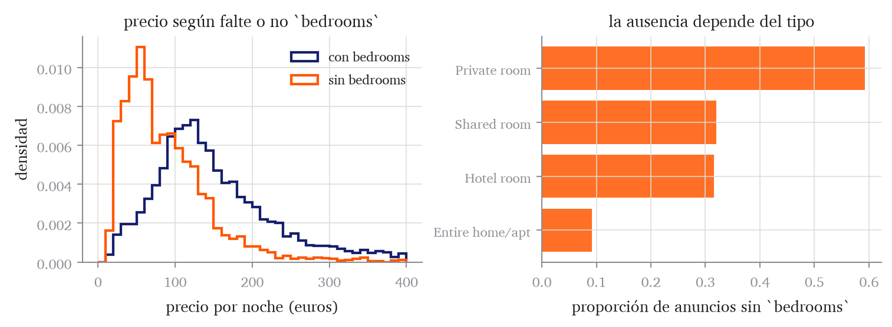
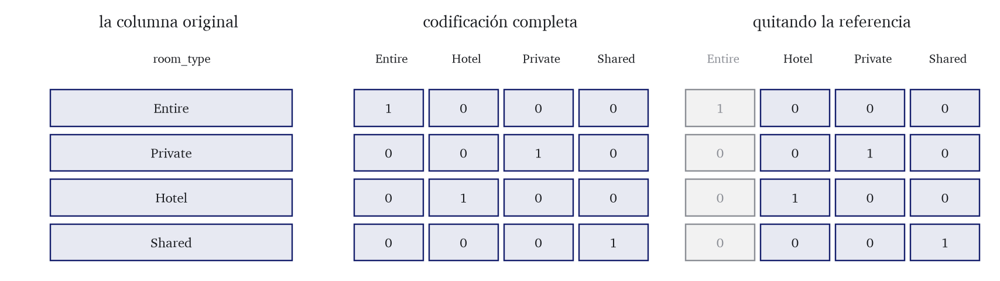
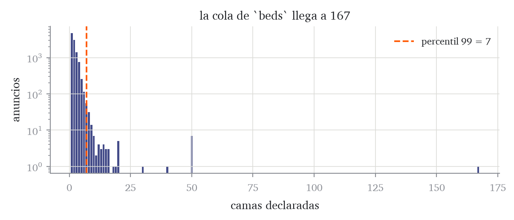
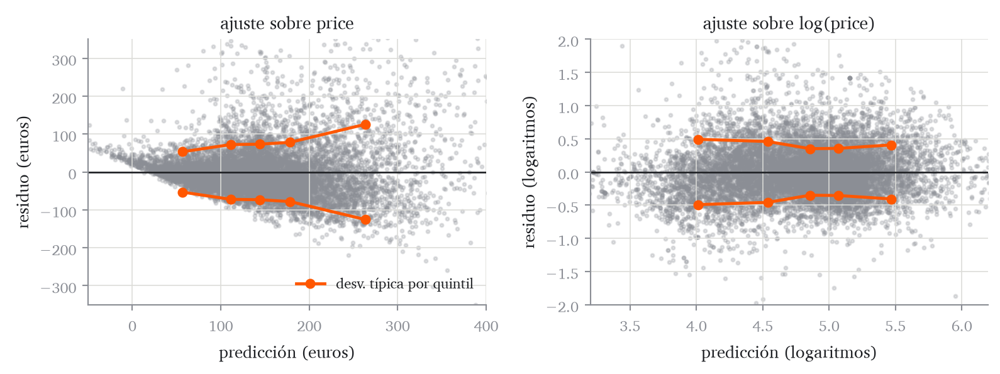
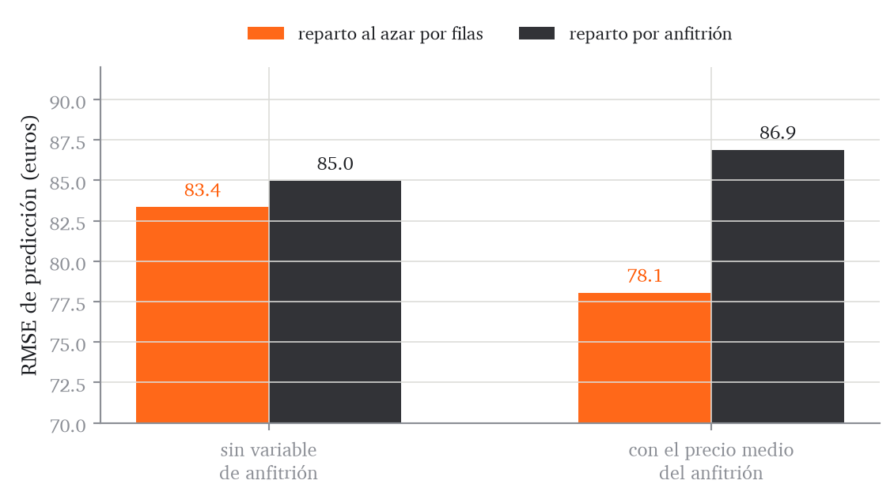

Exploración, transformaciones y pipelines reproducibles
Los datos crudos y los problemas que traen
En el capítulo anterior asumimos que la tabla de datos era una matriz de números completa, donde lo único que había que estimar eran los coeficientes. Los datos de próstata cumplían ese supuesto porque venían ya preparados. Casi ningún conjunto de datos real lo cumple.
Este capítulo empieza por enumerar los problemas más habituales que presentan las bases de datos reales y los motivos por los que cada uno impide ajustar el modelo del capítulo 3. Después trata estos problemas uno a uno. A continuación se verá que los tratamientos tienen parámetros, que esos parámetros son parámetros del modelo y que estimarlos con el test invalida la evaluación del capítulo 4, y que el Pipeline de scikit-learn es el objeto que hace difícil equivocarse en eso. Después queda un supuesto que no está en las columnas sino en las filas: qué hacer cuando dos observaciones comparten un origen común y el reparto al azar deja de responder a la pregunta que interesa.
Para ilustrar estos conceptos usaremos un conjunto de 15000 anuncios de alquiler de vivienda de corta estancia en Madrid, tomado de la publicación de datos abiertos de Airbnb.
Código
import numpy as npimport pandas as pdfrom matplotlib import pyplot as pltAZUL, GRIS, NARANJA, TINTA ="#151f6c", "#8b8e95", "#ff5700", "#1b1d21"anuncios = pd.read_csv("../datos/airbnb_madrid.csv")print("filas y columnas:", anuncios.shape)print(anuncios[["room_type", "accommodates", "bedrooms","review_scores_rating", "price"]] .head(4).to_string(index=False))
Cada fila de esta base de datos corresponde a un anuncio de Airbnb. Cada columna recoge una característica del anuncio. Las columnas pueden dividirse en seis grupos según el tipo de característica que describen.
tipo de alojamiento, tipo de alquiler, plazas, baños, dormitorios y camas
historial
number_of_reviews, review_scores_rating
número de reseñas y puntuación media
condiciones
minimum_nights, availability_365
noches mínimas y días disponibles al año
respuesta
price
precio por noche en euros
El problema de predicción es el siguiente: dado un nuevo anuncio, queremos predecir su precio por noche en euros a partir de sus características. La variable respuesta es, por tanto, price.
Veamos ahora en qué se diferencia esta tabla de una matriz de diseño. La matriz de diseño del capítulo 3 es una matriz de números reales, sin huecos, con la que se puede calcular \(\mathbf{X}^{\mathsf{T}}\mathbf{X}\) y resolver las ecuaciones normales. En la base de datos de Airbnb, no obstante, tenemos lo siguiente.
Código
IDENTIFICADORES = ["id", "host_id"]print(f"{'columna':30s}{'tipo':9s}{'ausentes':>9s}{'distintos':>10s} "f"{'mínimo':>9s}{'máximo':>9s}")for c in anuncios.columns: numerica = pd.api.types.is_numeric_dtype(anuncios[c])if numerica and c notin IDENTIFICADORES: rango =f"{anuncios[c].min():9.1f}{anuncios[c].max():9.1f}"else: rango =f"{'-':>9s}{'-':>9s}"# texto o identificadorprint(f"{c:30s}{str(anuncios[c].dtype):9s} "f"{anuncios[c].isna().mean():8.1%} "f"{anuncios[c].nunique():10d}{rango}")
De esta salida se leen cinco problemas, y son los que organizan el capítulo.
Valores ausentes. Cinco columnas tienen datos faltantes, bathrooms, bedrooms, beds, review_scores_rating y minimum_nights. Por ejemplo, el 22.7 % de las filas no contienen la información de la variable bedrooms. El producto \(\mathbf{X}^{\mathsf{T}}\mathbf{X}\) no está definido si falta una entrada, así que el modelo no se puede ajustar mientras queden huecos.
Columnas que no son números. Cuatro columnas contienen texto. Un modelo lineal multiplica cada columna por un coeficiente y suma, y eso no se puede hacer, por ejemplo, con la cadena Entire home/apt.
Escalas incompatibles.review_scores_rating va de 1 a 5 y availability_365 de 0 a 365. El ajuste se puede calcular, pero el capítulo 3 ya vio qué efecto puede tener esto en el algoritmo de descenso de gradiente. Además, en el capítulo 7 se penalizará el tamaño de los coeficientes, que depende de la escala de su columna.
Valores extremos.beds llega a 167 y minimum_nights a 365. Estos valores son inusualmente altos. Con la pérdida cuadrática el ajuste minimiza una media de residuos al cuadrado, de modo que el ajuste es muy sensible a observaciones de residuo grande.
Un recorrido de la respuesta de dos órdenes de magnitud. El precio va de 10 a 991 euros con mediana 124. Esto no es un problema por sí mismo: el modelo lineal-gaussiano del capítulo 1 no supone nada sobre la distribución marginal de \(Y\), sino sobre la de \(Y\)condicionada a \(\mathbf{x}\), y en concreto que su desviación típica \(\sigma\) es la misma para todas las observaciones. No obstante, un recorrido tan amplio obliga a comprobar ese supuesto, porque es frecuente que la dispersión de la respuesta crezca con su nivel, y en ese caso la pérdida cuadrática pondera de más las observaciones caras. La comprobación se hace sobre los residuos y no sobre el histograma, y está en Sección 5.2.5.
Figura 5.1: Distribución del precio y de su logaritmo. La mediana está en 124 euros y el máximo en 991, con una cola derecha larga. En escala logarítmica la distribución queda casi simétrica. El número de los títulos es el coeficiente de asimetría, que vale cero cuando la distribución es simétrica y crece con el peso de la cola derecha.
Nótese que estos cinco problemas no son todos los que existen. Por ejemplo, una tabla con fechas exige decidir cómo se convierten en números, una con texto libre exige extraer de él algo cuantificable, y una con variables cíclicas como el mes exige codificarlas de forma que diciembre quede cerca de enero.
Siguiendo el paso 1 del protocolo de Sección 4.7, separamos el conjunto de test antes de tomar cualquier decisión. Este reparto es al azar por filas, y en Sección 5.5 se verá que para esta tabla hay que revisarlo; hasta entonces sirve para ilustrar los tratamientos.
from sklearn.model_selection import train_test_splitindices_train, indices_test = train_test_split( np.arange(len(anuncios)), test_size=0.25, random_state=0)train, test = anuncios.iloc[indices_train], anuncios.iloc[indices_test]y_train, y_test = train["price"].to_numpy(), test["price"].to_numpy()print(f"train {len(train)} anuncios, test {len(test)} anuncios")
train 11250 anuncios, test 3750 anuncios
Un tratamiento para cada problema
Esta sección recorre los cinco problemas en el orden de la lista anterior. El orden en el que hay que aplicar los tratamientos es otro, y lo fija Definición 5.9. Cada subsección responde a las mismas cuatro preguntas:
en qué consiste el problema;
qué consecuencia tiene, es decir, qué operación del capítulo 3 deja de estar definida o qué cantidad se degrada, y en cuánto;
qué tratamientos existen, de qué depende elegir entre ellos y cuál elegimos;
cómo se implementa en scikit-learn, con el nombre de la clase y de sus argumentos.
Lo que se observa en los datos de Airbnb se intercala donde hace falta, porque en unos casos es lo que revela el problema y en otros lo que comprueba el tratamiento.
Antes de comenzar, conviene distinguir entre los dos tipos de variable predictora más comunes, pues los tratamientos de los problemas descritos dependen del tipo de variable a las que se apliquen.
Definición 5.1 (Variables numéricas y categóricas) Una variable numérica toma valores que son magnitudes (en general, números reales). Las operaciones aritméticas habituales solo tienen sentido sobre variables numéricas. Una variable categórica toma un valor de entre un conjunto finito de etiquetas; es nominal si las etiquetas no tienen un orden natural y ordinal si lo tienen. Las operaciones aritméticas no tienen sentido sobre variables categóricas.
En nuestra tabla, por ejemplo, accommodates es el número de plazas de la vivienda a la que se refiere el anuncio, y availability_365 el número de días del próximo año en que esa vivienda está ofrecida para alquiler según el propio anuncio: las dos son numéricas. room_type toma cuatro etiquetas, Entire home/apt, Private room, Shared room y Hotel room, sin ningún orden entre ellas: es categórica nominal. Los identificadores id y host_id son números, pero no son magnitudes: el anfitrión 8000 no es el doble del 4000, así que no son variables predictoras. Para este capítulo dejamos fuera latitude y longitude. Antes de comenzar, conviene definir dos vectores que recojan los nombres de las variables numéricas y categóricas.
NUMERICAS = ["accommodates", "bathrooms", "bedrooms", "beds","minimum_nights", "number_of_reviews","review_scores_rating", "availability_365"]1CATEGORICAS = ["room_type", "neighbourhood_group_cleansed"]print(f"{len(NUMERICAS)} variables numéricas y "f"{len(CATEGORICAS)} categóricas")for c in CATEGORICAS:print(f" {c}: {train[c].nunique()} categorías")
1
NUMERICAS recoge todas las columnas numéricas de la tabla menos los identificadores, las coordenadas y la respuesta. CATEGORICAS no recoge todas las categóricas: deja fuera neighbourhood_cleansed, que se retoma al comparar candidatos en la última sección, y property_type, que no entra en ninguno de los candidatos.
Definición 5.2 (Valor ausente) Un valor ausente es una entrada de la tabla para la que no hay dato. En pandas se representa con NaN para las columnas numéricas y con None o NaN para las de texto, y no es lo mismo que un cero ni que una cadena vacía: es la marca de que el dato no está.
Lo primero es localizarlos y contarlos.
ausentes = train.isna().sum()print("columnas con valores ausentes en train:")for c in ausentes[ausentes >0].index:print(f" {c:22s}{ausentes[c]:5d} de {len(train)} "f"({ausentes[c] /len(train):.1%})")
columnas con valores ausentes en train:
bathrooms 1247 de 11250 (11.1%)
bedrooms 2542 de 11250 (22.6%)
beds 766 de 11250 (6.8%)
review_scores_rating 1537 de 11250 (13.7%)
Qué consecuencia tiene. Ninguna operación del capítulo 3 está definida sobre un hueco. El producto \(\mathbf{X}^{\mathsf{T}}\mathbf{X}\) propaga el NaN a todas sus entradas y el sistema de ecuaciones normales queda indeterminado; scikit-learn lanza una excepción. No es una cuestión de calidad del ajuste sino de existencia: mientras quede un hueco no hay ajuste que calcular.
Qué tratamientos existen. La elección depende de la razón por la cual el dato está ausente.
Definición 5.3 (Tratamientos de los valores ausentes) Sea una columna con valores ausentes en algunas de sus filas. Las estrategias más habituales para eliminar valores ausentes son las siguientes.
Eliminar las filas con algún ausente. El resultado es una tabla completa, pero con menos observaciones. Esta solución solo es admisible si el hecho de faltar no guarda relación con la respuesta; en caso contrario la muestra que queda ya no es una muestra de \(P^\star\).
Eliminar la columna entera. Se pierde su información para todas las observaciones, y es razonable cuando faltan casi todos los valores de esa columna.
Imputar, es decir, sustituir cada valor ausente por un valor calculado a partir de los valores observados de esa misma columna.
Imputar y añadir una columna indicadora de ausencia, una columna nueva que vale uno en las filas en las que el valor original faltaba y cero en las demás.
La imputación es el tratamiento habitual porque conserva todas las observaciones y todas las columnas. Los dos primeros tratamientos se utilizan en situaciones específicas: eliminar filas cuando los ausentes son pocos y sin estructura, y eliminar la columna cuando faltan tantos valores que lo imputado dominaría lo observado. En la tabla de nuestro ejemplo no usaremos ninguno de los dos. Eliminar las filas con algún ausente dejaría 6732 de las 11250 de train, es decir, se perderían cuatro de cada diez observaciones. Y eliminar la columna tampoco procede, porque ninguna está cerca del caso que lo justifica: la que más ausentes tiene es bedrooms con el 22.6 %, de modo que más de tres de cada cuatro de sus valores son reales y la imputación afecta a una minoría de las filas. Además, la ausencia de bedrooms está asociada al precio, como se verá enseguida, así que borrar la columna perdería dos cosas a la vez: los valores observados y la información de que faltaban.
completas = train[NUMERICAS].dropna()print(f"filas de train: {len(train)}")print(f"filas sin ningún ausente en las numéricas: {len(completas)} "f"({len(completas) /len(train):.1%})")
filas de train: 11250
filas sin ningún ausente en las numéricas: 6732 (59.8%)
La elección del tratamiento de los valores ausentes depende del origen de la ausencia, es decir, del mecanismo que hace que un valor falte. Los tres casos más habituales son los siguientes.
Ausencia estructural: la cantidad no está definida para esa observación. Por ejemplo, un anuncio sin ninguna reseña no tiene puntuación media. El tratamiento es imputar un valor de relleno cualquiera y añadir la variable indicadora de la ausencia, porque lo que hay que transmitir al modelo no es un valor plausible sino el hecho de que la cantidad no aplica.
Ausencia predecible a partir de otras columnas: la probabilidad de que el valor falte depende de variables que sí están observadas. En esta tabla, bedrooms falta en el 59 % de las habitaciones privadas y en el 9 % de las viviendas completas, de modo que room_type predice en parte si falta. El tratamiento es imputar y añadir la indicadora, porque el hecho de faltar está asociado a la respuesta y por tanto lleva información sobre ella.
Ausencia completamente al azar: la probabilidad de que el valor falte es la misma para todas las observaciones y no depende de ninguna columna ni de la respuesta. Ocurre, por ejemplo, cuando se pierde un bloque de registros por un fallo técnico sin relación con su contenido. El tratamiento es imputar sin indicadora, porque la indicadora sería una columna cuyo valor no guarda relación con nada y solo añadiría un parámetro que estimar.
En los datos de Airbnb. Los dos casos que aparecen en nuestra base de datos son de los dos primeros tipos.
for c in ["bathrooms", "bedrooms", "review_scores_rating"]: falta = train[c].isna()print(f"{c:22s} precio medio si falta "f"{train.loc[falta, 'price'].mean():7.2f} "f"si no falta {train.loc[~falta, 'price'].mean():7.2f}")sin_resenas = train["number_of_reviews"] ==0puntuacion = train["review_scores_rating"]print(f"\nanuncios sin reseñas: {sin_resenas.sum()}")print(f" de ellos, con puntuación ausente: "f"{puntuacion[sin_resenas].isna().sum()}")print(f" de los que sí tienen reseñas, con puntuación ausente: "f"{puntuacion[~sin_resenas].isna().sum()}")
bathrooms precio medio si falta 121.66 si no falta 154.27
bedrooms precio medio si falta 92.92 si no falta 167.51
review_scores_rating precio medio si falta 140.30 si no falta 152.30
anuncios sin reseñas: 1537
de ellos, con puntuación ausente: 1537
de los que sí tienen reseñas, con puntuación ausente: 0
review_scores_rating es el caso estructural: falta exactamente cuando number_of_reviews vale cero. Un anuncio sin reseñas no tiene puntuación media.
bedrooms es el segundo caso. Falta en el 22.6 % de los anuncios de train, y esos anuncios son más baratos, 92.92 euros de media frente a 167.51.
Código
fig, ax = plt.subplots(1, 2, figsize=(8, 3.0))falta = train["bedrooms"].isna()bordes = np.linspace(0, 400, 41)for etiqueta, mascara, color in [("con bedrooms", ~falta, AZUL), ("sin bedrooms", falta, NARANJA)]: precios = train.loc[mascara, "price"]1 ax[0].hist(precios[precios <=400], bins=bordes, density=True, histtype="step", lw=1.6, color=color, label=etiqueta)ax[0].set(xlabel="precio por noche (euros)", ylabel="densidad", title="precio según falte o no `bedrooms`")ax[0].legend(fontsize=8.5)reparto = (train.assign(falta=falta).groupby("room_type")["falta"].mean() .sort_values())ax[1].barh(range(len(reparto)), reparto.to_numpy(), color=NARANJA, alpha=0.85)ax[1].set_yticks(range(len(reparto)))ax[1].set_yticklabels(reparto.index, fontsize=8.5)ax[1].set(xlabel="proporción de anuncios sin `bedrooms`", title="la ausencia depende del tipo")plt.tight_layout()
1
Se dejan fuera del histograma los anuncios de más de 400 euros, que son el 3.8 % de train, para no comprimir el resto; recortarlos al borde crearía una barra artificial que no dice nada.

Figura 5.2: La ausencia de bedrooms es del segundo tipo: se concentra en precios bajos y su proporción cambia mucho según el tipo de habitación, del 9 % en las viviendas completas al 59 % en las habitaciones privadas.
Fijado el origen de la ausencia, queda decidir con qué valor se rellenan los huecos, y eso depende del tipo de variable.
Tipo de variable
Imputaciones habituales
Cuándo
numérica
la media
la columna es simétrica y sin extremos
numérica
la mediana
hay valores extremos, que arrastran la media
numérica
una constante fuera del rango
ausencia estructural, con indicadora
categórica
la categoría más frecuente
pocos ausentes y sin estructura
categórica
una categoría nueva, “sin dato”
la ausencia lleva información
Imputar por un valor constante tiene un efecto medible sobre la columna. Sea una columna con \(n\) filas en total, de las cuales \(m\) tienen valor observado. Si los \(n-m\) ausentes se rellenan con la media de los observados, la varianza de la columna queda multiplicada por exactamente \(m/n\), porque las filas rellenadas valen justo la media y no aportan nada a la suma de cuadrados. La hoja de problemas pide demostrarlo, y Ejercicio 5.4 mide en una simulación qué le hace esa contracción al ajuste.
En scikit-learn todos los tratamientos de este capítulo se implementan con objetos que la librería llama transformadores. Conviene explicar brevemente qué son.
Definición 5.4 (Transformador) Un transformador de scikit-learn es un objeto con dos métodos. El método fit(X) recibe una tabla, calcula a partir de ella los valores que la transformación necesita y los guarda dentro del objeto, en atributos cuyo nombre acaba en guion bajo. El método transform(X) recibe una tabla, aplica la transformación usando los valores guardados y devuelve la tabla transformada, sin recalcular nada. El método fit_transform(X) hace las dos cosas seguidas sobre la misma tabla.
Como transform no recalcula nada, un transformador ya ajustado produce siempre la misma salida para una observación dada, independientemente de con qué observaciones se le pase. Por eso la transformación se puede estimar con train y aplicar a test sin que las observaciones de test intervengan en ella.
En scikit-learn, el transformador que imputa es SimpleImputer, y sus dos argumentos relevantes son estos.
strategy elige qué valor se imputa: "mean" la media de los valores observados, "median" su mediana, "most_frequent" el valor más repetido, y "constant" un valor fijo que se pasa aparte en fill_value.
add_indicator, si vale True, añade a la salida una columna indicadora por cada columna de entrada que tenga algún ausente en el momento del fit. Esas columnas van al final, en el orden de las columnas de entrada, y cuáles son queda en indicator_.features_, que guarda sus posiciones.
Con strategy="median", lo que fit calcula y guarda es una mediana por columna, en el atributo statistics_, y lo que transform hace es sustituir cada NaN por la mediana guardada de su columna. Veamos un ejemplo.
from sklearn.impute import SimpleImputer1imputador = SimpleImputer(strategy="median", add_indicator=True)2imputador.fit(train[NUMERICAS])print("medianas estimadas y guardadas en el objeto:")for c, m inzip(NUMERICAS, imputador.statistics_):print(f" {c:22s}{m:8.2f}")print("\ncolumnas de entrada:", len(NUMERICAS))print("columnas de salida: ", imputador.transform(train[NUMERICAS]).shape[1])print("indicadores añadidos para:", [NUMERICAS[j] for j in imputador.indicator_.features_])
1
Se usa la mediana y no la media porque varias de estas columnas tienen valores extremos. La media es más sensible a outliers.
2
fit recibe solo las columnas numéricas de train. Los ocho números que estima quedan en imputador.statistics_ y se reutilizan tal cual en cada transform posterior.
medianas estimadas y guardadas en el objeto:
accommodates 3.00
bathrooms 1.00
bedrooms 1.00
beds 2.00
minimum_nights 2.00
number_of_reviews 23.00
review_scores_rating 4.75
availability_365 245.00
columnas de entrada: 8
columnas de salida: 12
indicadores añadidos para: ['bathrooms', 'bedrooms', 'beds', 'review_scores_rating']
A review_scores_rating, que es el caso estructural, la tabla anterior le asignaría una constante fuera del rango. Aquí recibe la mediana como las demás columnas, y da igual: con su indicadora en la matriz de diseño, cambiar el valor de relleno no cambia ni las predicciones ni el riesgo del ajuste, y lo único que se mueve es el coeficiente de la indicadora, que absorbe la diferencia. Ejercicio 5.3 lo demuestra y lo comprueba. Conviene saberlo porque SimpleImputer aplica una sola estrategia a todas las columnas que recibe, y separar esta exigiría un ColumnTransformer más, que no compensa.
El argumento del origen de la ausencia dice qué indicadoras deberían servir, pero no cuánto sirven, y eso es una pregunta empírica: se responde con validación, que es la herramienta del capítulo 4. El experimento compara cuatro variantes del mismo modelo, todas con las ocho columnas numéricas imputadas por la mediana, y se diferencian solo en qué indicadoras conservan. Cada variante se estima con validación cruzada de cinco bloques sobre train, y se informa de la diferencia emparejada frente a la variante con las cuatro.
from sklearn.linear_model import LinearRegressionfrom sklearn.model_selection import KFolddef riesgo_por_bloque(quitar=()): riesgos = [] particion = KFold(5, shuffle=True, random_state=0)for i_ajuste, i_val in particion.split(train): imputador = SimpleImputer(strategy="median", add_indicator=True)1 imputador.fit(train.iloc[i_ajuste][NUMERICAS]) anadidas = [NUMERICAS[j] for j in imputador.indicator_.features_]2 columnas = [j for j inrange(len(NUMERICAS) +len(anadidas))if j <len(NUMERICAS)or anadidas[j -len(NUMERICAS)] notin quitar] A = imputador.transform( train.iloc[i_ajuste][NUMERICAS])[:, columnas] V = imputador.transform(train.iloc[i_val][NUMERICAS])[:, columnas] modelo = LinearRegression().fit(A, y_train[i_ajuste]) riesgos.append(((modelo.predict(V) - y_train[i_val]) **2).mean())return np.array(riesgos)referencia = riesgo_por_bloque()print(f"{'variante':32s}{'CV(5)':>9}{'diferencia emparejada':>24}")print(f"{'con las cuatro indicadoras':32s}{referencia.mean():9.1f} "f"{'referencia':>24}")for etiqueta, quitar in [ ("sin la de review_scores_rating", ["review_scores_rating"]), ("sin la de bedrooms", ["bedrooms"]), ("sin ninguna indicadora", NUMERICAS),]:3 d = riesgo_por_bloque(quitar) - referencia ee = d.std(ddof=1) / np.sqrt(len(d))print(f"{etiqueta:32s}{(d + referencia).mean():9.1f} "f"{f'{d.mean():+.1f} ± {ee:.1f}':>24}")
1
El imputador se ajusta dentro de cada bloque, con las filas de ajuste de ese bloque y no con toda la muestra de train.
2
Las ocho columnas numéricas se conservan siempre; lo que se quita son indicadoras.
3
La diferencia se calcula bloque a bloque, que es la diferencia emparejada de Definición 4.6: los cinco bloques son los mismos en las dos variantes, así que al restar se cancela su dificultad.
variante CV(5) diferencia emparejada
con las cuatro indicadoras 7802.6 referencia
sin la de review_scores_rating 7812.0 +9.4 ± 5.2
sin la de bedrooms 7878.3 +75.7 ± 8.1
sin ninguna indicadora 7890.0 +87.4 ± 7.2
La indicadora de bedrooms aporta \(75.7\) unidades de riesgo con un error típico emparejado de \(8.1\), más de nueve errores típicos, de modo que el argumento del origen acertaba: cuando la ausencia está asociada a la respuesta, la indicadora sirve, y aquí vale un 1 % del riesgo. La de review_scores_rating aporta \(9.4\) con error típico \(5.2\), menos de dos errores típicos y un 0.1 % del riesgo, así que con esta evidencia no se distingue de cero. Se conserva de todas formas, porque add_indicator=True la produce sin coste y quitar exactamente una indicadora exigiría código adicional. Quitar las cuatro cuesta \(87.4 \pm 7.2\) unidades de riesgo, de las que \(75.7\) corresponden a la indicadora de bedrooms.
Columnas que no son números
En qué consiste. Una variable categórica, en el sentido de Definición 5.1, toma etiquetas y no magnitudes.
Qué consecuencia tiene. El modelo del capítulo 3 calcula cantidades como \(\boldsymbol{w}^{\mathsf{T}}\mathbf{x}_i\), y esa cantidad no está definida si alguna coordenada de \(\mathbf{x}_i\) es una etiqueta.
Qué tratamientos existen. Para una variable categórica nominal, el tratamiento estándar es crear una columna por categoría.
Definición 5.5 (Codificación indicadora) La codificación indicadora, o one-hot encoding, sustituye una variable categórica de \(K\) categorías por \(K\) columnas \(I_1,\ldots,I_K\), donde \(I_k\) vale uno en las observaciones de la categoría \(k\) y cero en las demás. Cada fila tiene exactamente un uno.
Para una variable ordinal hay otra opción, asignar a cada etiqueta un número que respete el orden. Esto requiere definir una sola columna. El precio a pagar es tener que suponer que los saltos entre etiquetas consecutivas son equivalentes.
La codificación completa de una variable categórica presenta el siguiente problema.
Proposición 5.1 (La codificación completa deja la matriz sin rango completo) Sea \(\mathbf{X}\) una matriz de diseño que contiene la columna de unos y las \(K\) columnas indicadoras procedentes de una variable categórica de \(K\) categorías. Entonces \(\mathbf{X}\) no tiene rango completo por columnas.
Demostración. Por Definición 5.5 cada fila tiene exactamente un uno entre las \(K\) indicadoras, de modo que la suma de esas \(K\) columnas es un vector de unos, que es precisamente la primera columna de \(\mathbf{X}\). Existe entonces una combinación lineal no trivial de las columnas de \(\mathbf{X}\) que da el vector nulo: tomando \(\mathbf d\) con \(-1\) en la coordenada del intercepto, \(1\) en las \(K\) de las indicadoras y \(0\) en el resto, se tiene \(\mathbf{X}\mathbf d=\mathbf{0}\) con \(\mathbf d\neq\mathbf{0}\). El núcleo de \(\mathbf{X}\) no es trivial, y por Definición 1 del repaso de álgebra eso es exactamente lo que significa que el rango no sea completo por columnas.
Si la matriz de diseño no tiene rango completo, por Teorema 3.2, el ajuste existe pero no es único: si \(\hat{\boldsymbol{w}}\) es un ajuste, entonces \(\hat{\boldsymbol{w}}+t\mathbf d\) lo es también para todo \(t\), porque \(\mathbf{X}(\hat{\boldsymbol{w}}+t\mathbf
d)=\mathbf{X}\hat{\boldsymbol{w}}\) y las predicciones no cambian.
El tratamiento más natural es descartar una de las \(K\) indicadoras.
Definición 5.6 (Categoría de referencia) La categoría de referencia es la categoría cuya columna indicadora se descarta. Con ella fuera, las \(K-1\) columnas restantes y la de unos son linealmente independientes, y los coeficientes se leen así: el intercepto es la predicción de la categoría de referencia, y el coeficiente de \(I_k\) es la diferencia entre la predicción de la categoría \(k\) y la de la referencia.
La fila de una observación de la categoría de referencia tiene ceros en todas las indicadoras que quedan, de modo que se la reconoce por ausencia. Cuál de las \(K\) se descarta no cambia las predicciones, solo cambia respecto de qué se leen los coeficientes.
En la siguiente figura ilustramos las dos codificaciones, la completa y la reducida, sobre la variable room_type.
Código
fig, ax = plt.subplots(1, 3, figsize=(9, 2.6))cortas = ["Entire", "Private", "Hotel", "Shared"]categorias = ["Entire", "Hotel", "Private", "Shared"]def dibuja(eje, cabeceras, celdas, titulo, resaltada=None): ncol, nfila =len(cabeceras), len(celdas)for j, cab inenumerate(cabeceras): color = GRIS if resaltada == j else TINTA eje.text(j +0.5, nfila +0.35, cab, ha="center", va="bottom", fontsize=8, color=color)for i, fila inenumerate(celdas):for j, v inenumerate(fila): gris = resaltada == j eje.add_patch(plt.Rectangle( (j, nfila -1- i), 0.92, 0.82, facecolor="#f2f2f2"if gris else"#e7e9f2", edgecolor=GRIS if gris else AZUL, lw=0.9)) eje.text(j +0.46, nfila -1- i +0.41, str(v), ha="center", va="center", fontsize=8.5, color=GRIS if gris else TINTA) eje.set(xlim=(-0.15, ncol +0.05), ylim=(-0.2, nfila +1.0), title=titulo) eje.set_axis_off()dibuja(ax[0], ["room_type"], [[c] for c in cortas], "la columna original")dibuja(ax[1], categorias, [[int(c == k) for k in categorias] for c in cortas],"codificación completa")dibuja(ax[2], categorias, [[int(c == k) for k in categorias] for c in cortas],"quitando la referencia", resaltada=0)plt.tight_layout()

Figura 5.3: Cuatro filas de room_type, con las categorías abreviadas. En el centro, la codificación completa: una columna por categoría y un solo uno en cada fila. A la derecha, la misma codificación con la primera columna descartada, que es la que se usa; el motivo lo da Proposición 5.1.
En scikit-learn. El transformador, en el sentido de Definición 5.4, es OneHotEncoder. Lo que estima en fit es la lista de categorías de cada columna, que queda en el atributo categories_, y lo que hace en transform es producir una columna por cada categoría de esa lista. Tres argumentos importan.
drop="first" descarta la indicadora de la primera categoría en orden alfabético, que pasa a ser la categoría de referencia.
sparse_output=False pide que la salida sea una matriz de numpy corriente. Por defecto OneHotEncoder devuelve una matriz dispersa, una estructura que almacena solo las entradas distintas de cero junto con su posición; con codificación indicadora la mayoría de las entradas son ceros, así que ahorra memoria. Aquí pedimos la matriz completa porque el resto del código del capítulo opera con arrays de numpy.
handle_unknown decide qué hacer con una categoría que no estaba en la lista aprendida, y es el asunto del apartado siguiente.
from sklearn.preprocessing import OneHotEncodercompleto = OneHotEncoder(sparse_output=False).fit(train[["room_type"]])reducido = OneHotEncoder(drop="first", sparse_output=False).fit(train[["room_type"]])print("categorías aprendidas:", list(completo.categories_[0]))print("categoría de referencia:", reducido.categories_[0][0])X_completa = np.column_stack([np.ones(len(train)), completo.transform(train[["room_type"]])])X_reducida = np.column_stack([np.ones(len(train)), reducido.transform(train[["room_type"]])])print(f"\ncon las {len(completo.categories_[0])} indicadoras: "f"{X_completa.shape[1]} columnas, "f"rango {np.linalg.matrix_rank(X_completa)}")print(f"quitando la referencia: {X_reducida.shape[1]} columnas, "f"rango {np.linalg.matrix_rank(X_reducida)}")
categorías aprendidas: ['Entire home/apt', 'Hotel room', 'Private room', 'Shared room']
categoría de referencia: Entire home/apt
con las 4 indicadoras: 5 columnas, rango 4
quitando la referencia: 4 columnas, rango 4
Las variables categóricas pueden presentar dos problemas más.
Categorías que no estaban al ajustar. Uno de los problemas más frecuentes con variables categóricas es encontrarse en test una categoría que no aparecía en train. El codificador aprende la lista de categorías en fit, y produce una columna por cada una; si al transformar aparece una etiqueta que no está en esa lista, no hay ninguna columna a la que asignarle el uno y hay que decidir qué se hace con esa fila.
for c in ["room_type", "neighbourhood_group_cleansed","neighbourhood_cleansed", "property_type"]: solo_test =set(test[c]) -set(train[c])print(f"{c:30s} categorías en train {train[c].nunique():4d} "f"solo en test {len(solo_test)}")
room_type categorías en train 4 solo en test 0
neighbourhood_group_cleansed categorías en train 21 solo en test 0
neighbourhood_cleansed categorías en train 127 solo en test 0
property_type categorías en train 47 solo en test 4
Cuatro de los 51 tipos de propiedad solo aparecen en test. Hay tres tratamientos para este problema, y OneHotEncoder los cubre con el argumento handle_unknown.
Valor
Qué hace
Cuándo conviene
"error"
lanza una excepción
en producción, si aparece una categoría nueva se para el proceso
"ignore"
codifica ceros en todas las indicadoras
por defecto en el curso; la observación se predice como la referencia
"infrequent_if_exist"
la trata como una de las categorías raras, que son las que agrupa el argumento min_frequency
cuando hay muchas categorías con pocas observaciones y se ha fijado min_frequency
La tercera opción no se entiende sola, porque no dice qué es una categoría rara. Eso lo fija un segundo argumento del mismo OneHotEncoder, min_frequency, y las dos opciones se pasan juntas. Con min_frequency=k, el codificador agrupa en fit todas las categorías que aparecen menos de \(k\) veces y les da una sola columna común, en lugar de una cada una. Con handle_unknown="infrequent_if_exist", una categoría desconocida se codifica en esa columna común. La predicción que resulta es entonces la del conjunto de las categorías poco frecuentes, que para una categoría de la que no se sabe nada es una referencia más razonable que la categoría concreta que se eligió como referencia por orden alfabético. Si no se ha fijado min_frequency, no hay columna común y esta opción se comporta como "ignore".
Alta cardinalidad. Llamamos cardinalidad al número de categorías distintas de una variable categórica. Codificar neighbourhood_cleansed, con 127, añade 126 columnas, y 55 de esos barrios tienen menos de 30 anuncios en train, de modo que su coeficiente se estima con menos de 30 observaciones. Los tratamientos son tres: usar una jerarquía más gruesa, por ejemplo el distrito, con 21; agrupar las categorías raras en una sola, que es lo que hace el argumento min_frequency que acabamos de ver; o penalizar el tamaño de los coeficientes, que es el capítulo 7. Los dos primeros se comparan en la última sección.
agrupado = OneHotEncoder(drop="first", handle_unknown="infrequent_if_exist", min_frequency=30, sparse_output=False)agrupado.fit(train[["neighbourhood_cleansed"]])print(f"barrios en train: {train['neighbourhood_cleansed'].nunique()}")print(f"columnas sin agrupar: "f"{train['neighbourhood_cleansed'].nunique() -1}")print(f"columnas agrupando los de menos de 30 anuncios: "f"{agrupado.transform(train[['neighbourhood_cleansed']]).shape[1]}")
barrios en train: 127
columnas sin agrupar: 126
columnas agrupando los de menos de 30 anuncios: 72
Escalas incompatibles
En qué consiste. Dos columnas están en escalas incompatibles cuando sus rangos de variación son de órdenes de magnitud distintos. Veamos las escalas de las variables numéricas de la base de datos de Airbnb.
from sklearn.preprocessing import StandardScalerZ = SimpleImputer(strategy="median").fit_transform(train[NUMERICAS])print(f"{'columna':22s}{'media':>9s}{'desv. típica':>13s}")for j, c inenumerate(NUMERICAS):print(f"{c:22s}{Z[:, j].mean():9.2f}{Z[:, j].std():13.2f}")
Las desviaciones típicas van de \(0.44\) en review_scores_rating a \(114.50\) en number_of_reviews, un factor de 260.
Qué consecuencia tiene. Existen tres casos.
Para el ajuste por mínimos cuadrados, ninguna: las predicciones no cambian. Multiplicar una columna por una constante no cambia qué predicciones puede producir el modelo: si con la columna original la predicción \(w_jx_{ij}\) era alcanzable, con la columna multiplicada por \(c\) se alcanza la misma poniendo \(w_j/c\) en su lugar. Como el conjunto de predicciones alcanzables no cambia, el riesgo mínimo tampoco, y el ajuste es literalmente el mismo. Restar una constante a la columna se absorbe igual, por otra vía: la columna de unos con la que LinearRegression ajusta el intercepto ya está en la matriz de diseño, así que ese desplazamiento se compensa en el intercepto. Se puede comprobar: con StandardScaler, con RobustScaler, con MinMaxScaler y sin escalar, las predicciones de este capítulo coinciden hasta \(10^{-11}\).
Para el descenso de gradiente, cambia qué tasas de aprendizaje convergen y a qué riesgo llegan las que convergen. El capítulo 3 lo midió sobre los datos de próstata sin escalar: con \(\alpha=10^{-3}\) el riesgo crece sin límite en 200 iteraciones, y con \(\alpha=10^{-4}\) y veinte mil iteraciones se queda en \(0.4825\) frente al mínimo \(0.4439\). Con las mismas columnas estandarizadas, \(\alpha=0.1\) alcanza el mínimo. La razón es que la curvatura del riesgo en la dirección de una columna crece con la escala de esa columna, de modo que el paso que es estable en la dirección de mayor curvatura es demasiado pequeño en las demás.
Para los métodos con penalización, cambia qué columnas quedan más penalizadas y, con ello, qué modelo se elige. El capítulo 7 añade al riesgo un término que crece con el tamaño de los coeficientes. Si una columna se multiplica por \(c\), su coeficiente se divide por \(c\) y su aportación a una penalización cuadrática se divide por \(c^2\). Dos columnas con el mismo contenido predictivo pero medidas en unidades distintas reciben penalizaciones que difieren en ese factor, y la que esté medida en unidades grandes queda penalizada de menos.
Qué tratamientos existen.
Tratamiento
Qué hace
Cuándo
estandarización
resta la media y divide por la desviación típica
opción por defecto
escalado robusto
resta la mediana y divide por el rango intercuartílico \(q_{0{,}75}-q_{0{,}25}\), con los cuantiles de Definición 1
hay valores extremos
escalado a un rango
lleva el mínimo a 0 y el máximo a 1
se necesita un rango acotado
En scikit-learn estos escalados se implementa, respectivamente con StandardScaler, RobustScaler y MinMaxScaler. Los tres estiman en fit dos números por columna y los aplican en transform.
escalador = StandardScaler().fit(Z)Zs = escalador.transform(Z)print("medias y desviaciones típicas después de estandarizar:")print(f" media máxima en valor absoluto: "f"{np.abs(Zs.mean(axis=0)).max():.1e}")print(f" desviaciones típicas: entre {Zs.std(axis=0).min():.4f} "f"y {Zs.std(axis=0).max():.4f}")
medias y desviaciones típicas después de estandarizar:
media máxima en valor absoluto: 9.7e-16
desviaciones típicas: entre 1.0000 y 1.0000
Valores extremos
Definición 5.7 (Valor extremo) Un valor extremo de una columna es una observación muy alejada del resto de los valores de esa columna. Conviene distinguir dos orígenes: un error de medida o de registro, que no describe ninguna realidad, y un valor legítimo, que sí la describe.
Qué consecuencia tiene. El riesgo empírico es la media de los residuos al cuadrado, de modo que una observación con residuo \(r_i\) aporta \(r_i^2/n\) al total del riesgo. Una observación cuyo residuo sea diez veces el típico aporta cien veces lo que aporta una típica, y como el ajuste minimiza esa media, las observaciones de residuo grande son las que más determinan dónde acaba \(\hat{\boldsymbol{w}}\).
Veamos algunas columnas con valores extremos en nuestra base de datos.
for c in ["beds", "minimum_nights", "accommodates"]: q = train[c].quantile([0.5, 0.99]).to_numpy()print(f"{c:18s} mediana {q[0]:6.1f} percentil 99 {q[1]:6.1f} "f"máximo {train[c].max():6.1f} "f"observaciones por encima del p99: {(train[c] > q[1]).sum():4d}")
beds mediana 2.0 percentil 99 7.0 máximo 167.0 observaciones por encima del p99: 88
minimum_nights mediana 2.0 percentil 99 32.0 máximo 360.0 observaciones por encima del p99: 76
accommodates mediana 3.0 percentil 99 10.0 máximo 16.0 observaciones por encima del p99: 70
Código
fig, ax = plt.subplots(figsize=(6.4, 2.8))conteo = train["beds"].value_counts().sort_index()ax.bar(conteo.index, conteo.to_numpy(), color=AZUL, alpha=0.8, width=0.8)limite = train["beds"].quantile(0.99)ax.axvline(limite, color=NARANJA, lw=1.4, linestyle="--", label=f"percentil 99 = {limite:.0f}")ax.set(xlabel="camas declaradas", ylabel="anuncios", yscale="log", title="la cola de `beds` llega a 167")ax.legend(fontsize=8.5)plt.tight_layout()

Figura 5.4: Distribución de beds en escala logarítmica, para que la cola se vea. El 99 % de los anuncios de train que declaran camas, 10484 de 11250, declara siete o menos, y los 88 restantes se reparten entre ocho y 167.
Un anuncio con 167 camas es casi con seguridad un error de registro.
Qué tratamientos existen.
Tratamiento
Qué hace
Cuándo
dejarlos
ninguna transformación
son valores legítimos que nos podemos encontrar en la práctica
recortar, o winsorizar
sustituye lo que pasa de un percentil alto, en el sentido de Definición 1, por ese percentil
se sospecha error, o la cola no interesa
transformar
aplica un logaritmo o una raíz para comprimir la cola
si los valores son positivos
descartar la fila
la quita de la muestra
se ha verificado que es un error
cambiar de pérdida
usa una pérdida menos sensible, como la absoluta
el criterio de negocio lo admite
En scikit-learn no hay un transformador de recorte estándar, así que hay que escribirlo. Basta una clase con fit y transform que herede de BaseEstimator y TransformerMixin, y a partir de ahí encaja en todo lo demás.
from sklearn.base import BaseEstimator, TransformerMixinclass Recortador(BaseEstimator, TransformerMixin):"""Recorta cada columna al percentil `cuantil` estimado en fit."""def__init__(self, cuantil=0.99):self.cuantil = cuantildef fit(self, X, y=None):1self.limites_ = np.nanquantile(np.asarray(X, dtype=float),self.cuantil, axis=0)returnselfdef transform(self, X):return np.minimum(np.asarray(X, dtype=float), self.limites_)recortador = Recortador().fit(train[NUMERICAS])recortada = recortador.transform(train[NUMERICAS])print("límites estimados en fit:")for c, limite inzip(NUMERICAS, recortador.limites_):print(f" {c:22s}{limite:8.1f}")columna_beds = recortada[:, NUMERICAS.index("beds")]print(f"\nmáximo de beds antes {train['beds'].max():.0f}, "2f"después {np.nanmax(columna_beds):.0f}")
1
nanquantile y no quantile, porque el recortador va antes del imputador y por tanto ve los ausentes. El guion bajo final de limites_ es el convenio de scikit-learn para lo que se aprende en fit.
2
nanmax por el mismo motivo: al recortar antes de imputar, los ausentes siguen ahí, y np.minimum los propaga. Es lo correcto, porque de rellenarlos se encarga el paso siguiente.
límites estimados en fit:
accommodates 10.0
bathrooms 4.0
bedrooms 5.0
beds 7.0
minimum_nights 32.0
number_of_reviews 549.0
review_scores_rating 5.0
availability_365 365.0
máximo de beds antes 167, después 7
La última sección mide si recortar baja el riesgo de validación, con el mismo protocolo que el resto de las decisiones.
La dispersión de la respuesta
En qué consiste. El quinto problema de la lista no está en las columnas predictoras sino en la respuesta. El modelo del capítulo 1 supone que \(Y=f(\mathbf{x})+\varepsilon\) con \(\mathrm{Var}\!\left( \varepsilon \right)=\sigma^2\)la misma para todas las observaciones. Este supuesto tiene nombre: homocedasticidad. Cuando la dispersión del ruido cambia con \(\mathbf{x}\) se habla de heterocedasticidad, y entonces la pérdida cuadrática pondera de más las observaciones de mayor dispersión, porque son las que producen residuos grandes.
Qué consecuencia tiene. Lo primero es lo que no cambia, porque lo que aquí interesa es predecir. El ajuste sigue siendo calculable, y sus predicciones siguen estimando (de forma insesgada) la media condicional \(\mathbb{E}\!\left[ Y \,\vert\,\mathbf{x} \right]\), que es la función que minimiza el riesgo cuadrático: la heterocedasticidad no invalida el modelo como predictor. Lo que cambia son otras tres cosas, y las tres se pueden medir con el ajuste que diagnostica Figura 5.5, sobre estos mismos datos.
El riesgo global deja de describir una predicción concreta. La desviación típica de los residuos es de \(84.40\) euros para toda la muestra, pero por quintiles de la predicción va de \(53.13\) en el más barato a \(125.69\) en el más caro. Un solo número esconde un factor de 2.4 entre una zona y otra, y quien lea ese número creerá que sabe cuánto se equivoca el modelo en un anuncio cualquiera.
La suma que se minimiza está dominada por una parte de la muestra. El quintil más caro aporta el \(44.6\,\%\) del riesgo y el más barato el \(8.1\,\%\), de modo que los coeficientes se fijan sobre todo para reducir residuos de la zona cara, que son en buena parte ruido irreducible, y no para afinar la zona barata, donde el modelo podría ser más preciso.
Los resultados escritos con un único \(\sigma\) dejan de aplicarse tal cual. El suelo de ruido del capítulo 2 y la descomposición del capítulo 6 suponen una sola \(\sigma^2\). Con dispersión variable no hay un único suelo, sino uno por zona, y el promedio no informa de ninguna de ellas.
Cómo se diagnostica. El histograma de Figura 5.1 describe la distribución marginal del precio, y esa distribución puede ser muy asimétrica sin que se incumpla nada: basta con que \(f(\mathbf{x})\) varíe mucho entre anuncios, que es lo que uno espera de un modelo útil. El supuesto que hay que comprobar es condicional, así que la comprobación se hace sobre los residuos del ajuste, mirando si su dispersión cambia con el nivel predicho.
Un preparado mínimo hecho a mano, sin recorte, solo para este diagnóstico. La versión definitiva llega en Definición 5.9.
2
Los ejes horizontales se recortan al recorrido donde está la práctica totalidad de las predicciones; unas pocas quedan fuera y no cambian nada de lo que se lee.

Figura 5.5: Residuos frente a predicción, con la desviación típica de los residuos dentro de cada quintil de la predicción. A la izquierda, ajustando sobre price: la desviación típica pasa de \(53\) euros en el quintil más barato a \(126\) en el más caro. A la derecha, ajustando sobre \(\log(\texttt{price})\): va de \(0.49\) a \(0.41\) pasando por \(0.35\), sin tendencia clara.
Como vemos, la dispersión del residuo se multiplica por 2.4 entre el quintil más barato y el más caro, de modo que el supuesto de homocedasticidad no se cumple sobre la escala original. El panel derecho muestra que sobre la escala logarítmica sí se cumple de forma aproximada, y esa es la razón técnica por la que el logaritmo se usa tanto con precios: estabiliza la dispersión condicional. La simetría que gana el histograma es un efecto secundario, y por sí sola no habría justificado la transformación.
Qué tratamientos existen.
Tratamiento
Qué hace
Cuándo
ajustar sobre \(\log(\texttt{price})\)
estabiliza la dispersión condicional
los valores son positivos y la dispersión crece con el nivel
cambiar de pérdida
la pérdida absoluta penaliza menos los residuos grandes
el coste real del error crece de forma proporcional al error
La primera solución cambia lo que se predice. El modelo ajustado sobre logaritmos predice un valor \(\widehat{\ell}\) en la escala logarítmica; para dar un precio en euros hay que exponenciar, y \(e^{\widehat{\ell}}\) no estima la media del precio dado \(\mathbf{x}\), sino un valor por debajo de ella. La hoja de problemas mide cuánto.
Nuestra decisión es trabajar con price y con pérdida cuadrática, para que la comparación con el capítulo 4 sea directa. La alternativa se mide en la hoja de problemas, y allí se ve que mejora el error absoluto y deja el error cuadrático prácticamente igual.
Resumen de la sección
Los cinco problemas, el tratamiento que hemos elegido para cada uno y el objeto que lo implementa. La columna de la derecha adelanta que cuatro de los cinco tratamientos son transformadores en el sentido de Definición 5.4.
ninguno; se deja price y se mide la alternativa en la hoja
Hay un patrón en toda la tabla: todos los tratamientos elegidos estiman algo a partir de los datos. Ocho medianas el imputador, una lista de categorías el codificador, ocho medias y ocho desviaciones típicas el escalador, ocho percentiles el recortador. La sección siguiente trata qué datos hay que usar para estimarlos.
Los parámetros de un tratamiento son parámetros del modelo
Supongamos ahora que los números que estima cada tratamiento se calculan con la tabla completa, test incluido, en lugar de con train. Entonces la mediana que se usa para rellenar un hueco de una observación de test se ha calculado usando, entre otras, las propias observaciones de test; y el modelo que se evalúa sobre \(\mathcal{D}_{\mathrm{test}}\) depende de \(\mathcal{D}_{\mathrm{test}}\). Eso es lo que se conoce como fuga de información.
Definición 5.8 (Fuga de información) Hay fuga de información, o data leakage, cuando el modelo que se evalúa depende de observaciones de \(\mathcal{D}_{\mathrm{test}}\). La dependencia puede venir de los coeficientes, de los parámetros de un tratamiento, o de cualquier decisión tomada mirando esas observaciones.
Corolario 5.1 (La fuga invalida la estimación de test) Si hay fuga de información, Teorema 4.1 no se aplica y \(\hat{R}_{\mathcal{D}_{\mathrm{test}}}\) deja de ser una estimación insesgada del riesgo del modelo.
Demostración. La hipótesis de Teorema 4.1 es que el vector de parámetros esté fijado sin usar \(\mathcal{D}_{\mathrm{test}}\). Con fuga eso no se cumple, y entonces el paso de la demostración en el que cada sumando de \(\hat{R}_{\mathcal{D}_{\mathrm{test}}}\) es una función fija evaluada en una observación independiente no se puede dar: la función depende de la observación en la que se evalúa. Sin ese paso no queda ninguna cota sobre la dirección ni el tamaño de la desviación.
Conviene separar los tratamientos según tengan parámetros o no, porque solo los primeros pueden producir fuga.
Operación
¿Estima algo?
¿Puede producir fuga?
multiplicar una columna por dos
no
no
sumar o restar dos columnas
no
no
tomar el logaritmo de una columna
no
no
imputar por la mediana
sí, una mediana
sí
estandarizar
sí, media y desviación
sí
codificar categorías
sí, la lista de categorías
sí
recortar a un percentil
sí, un percentil
sí
construir una variable a partir de la respuesta
sí, y de la respuesta
sí, la desviación que produce se mide en Sección 5.5
La última fila es la peligrosa, y Sección 5.5 la mide: en nuestro ejemplo, una variable construida a partir de price puede hacer que el riesgo de test quede un 19 % por debajo del riesgo real.
Codificar categorías antes de repartir.pandas ofrece su propia codificación indicadora, pd.get_dummies(datos), que recorre las columnas de texto de una tabla y las sustituye por sus indicadoras. A diferencia de OneHotEncoder, no es un transformador: no guarda nada y no tiene transform, de modo que cada vez que se llama vuelve a mirar qué categorías hay en la tabla que recibe. Si se aplica a la tabla completa y se reparte después, la lista de categorías, y con ella el número y el orden de las columnas, se decide mirando también las filas de test, de modo que hay fuga.
Además de la fuga, codificar sobre la tabla completa tiene un segundo efecto: si una categoría solo aparece en test, get_dummies sobre la tabla completa le crea su columna y el modelo le asigna un coeficiente que no ha podido estimar con ningún dato. Codificando solo con train, esa categoría se detecta al transformar y la trata handle_unknown.
El pipeline reúne los tratamientos y el modelo
Los tratamientos de la sección segunda se pueden encadenar a mano, en este orden: ajustar el recortador con las columnas numéricas de train y transformar; ajustar el imputador con el resultado y transformar; ajustar el escalador con el resultado y transformar; ajustar el codificador con las columnas categóricas de train y transformar; concatenar las dos partes; ajustar el modelo. Y después repetir la mitad de esas llamadas, las de transform y ninguna de fit, sobre test.
Son cuatro objetos con estado, ocho llamadas y un orden que no se puede alterar. Los tres errores más frecuentes son:
llamar a fit sobre la tabla equivocada, que es la fuga de la sección anterior y no produce ningún aviso;
llamar a fit_transform sobre test en lugar de a transform;
aplicar los tratamientos en distinto orden al ajustar y al transformar, o olvidar uno.
scikit-learn ofrece dos objetos que mitigan estos errores.
Definición 5.9 (Pipeline y ColumnTransformer) Un Pipeline es una secuencia de transformadores terminada opcionalmente en un modelo. Su fit llama a fit_transform en cada transformador en orden, pasando la salida de uno a la entrada del siguiente, y a fit en el último paso. Su transform, o su predict, llama solo a transform en cada paso, sin reestimar nada.
Un ColumnTransformer aplica un transformador distinto a cada grupo de columnas y concatena horizontalmente los resultados. Recibe una lista de tripletes (nombre, transformador, columnas), y descarta las columnas que no aparezcan en ninguno de ellos.
Con esto, todos los tratamientos y el modelo quedan en un solo objeto que expone el mismo fit y predict del capítulo 3. Veamos un ejemplo.
from sklearn.compose import ColumnTransformerfrom sklearn.linear_model import LinearRegressionfrom sklearn.pipeline import Pipelinedef modelo_completo(categoricas=CATEGORICAS, numericas=NUMERICAS, recorte=False, min_frecuencia=None): pasos = []1if recorte: pasos.append(("recortar", Recortador())) pasos += [("imputar", SimpleImputer(strategy="median", add_indicator=True)),2 ("escalar", StandardScaler())]3 partes = [("num", Pipeline(pasos), numericas)]if categoricas: opciones =dict(drop="first", sparse_output=False)if min_frecuencia isNone: opciones["handle_unknown"] ="ignore"else: opciones["handle_unknown"] ="infrequent_if_exist" opciones["min_frequency"] = min_frecuencia partes.append(("cat", OneHotEncoder(**opciones), categoricas))4return Pipeline([("preparar", ColumnTransformer(partes)), ("modelo", LinearRegression())])5ajustado = modelo_completo().fit(train, y_train)print("columnas de la matriz de diseño:", ajustado.named_steps["preparar"].transform(train).shape[1])print("pasos del preparado numérico:", [n for n, _ in ajustado.named_steps["preparar"] .named_transformers_["num"].steps])
1
El recortador va antes del imputador, para que sus percentiles se calculen solo con los valores observados, que es lo que hace nanquantile. Con el orden inverso se calcularían sobre una columna en la que una parte de las filas ya vale la mediana, y el límite saldría distinto.
2
El escalador va después del imputador, porque StandardScaler no admite ausentes. Con el orden inverso, fit daría error.
3
Las columnas numéricas pasan por el Pipeline interno, al que llamamos el preparado numérico, que aquí tiene dos pasos y tres cuando se pide el recorte, y las categóricas por el codificador. El ColumnTransformer concatena las dos salidas.
4
El pipeline exterior tiene dos pasos: preparar y modelo. Cada paso se puede recuperar por su nombre con named_steps, que es lo que usan las dos líneas de abajo.
5
Una sola llamada a fit, con train completo. El pipeline reparte internamente las columnas y ninguna de sus piezas recibe test.
columnas de la matriz de diseño: 35
pasos del preparado numérico: ['imputar', 'escalar']
Las 35 columnas salen de sumar 8 numéricas, 4 indicadoras de ausencia, 3 de room_type y 20 del distrito, cada categórica sin su referencia. Al intercepto no le corresponde ninguna, porque lo añade LinearRegression.
Con el pipeline, la regla de la sección anterior queda concentrada en un solo sitio: el único fit que se llama es el del pipeline, y la tabla que recibe es la única que ven sus piezas internas. Hay que acordarse igual de pasarle train, porque el pipeline no puede saber qué tabla le corresponde; lo que ya no puede pasar es que una de las piezas reciba una tabla distinta de las demás.
La validación cruzada con un pipeline
Hay un caso en el que encadenar los tratamientos a mano es especialmente fácil de estropear: la validación cruzada del capítulo 4. En Definición 4.5 cada bloque \(\mathcal{F}_{k}\) se aparta y el modelo se ajusta con los otros \(K-1\). Si los tratamientos se estiman una sola vez, antes de partir en bloques, entonces al evaluar sobre \(\mathcal{F}_{k}\) esos tratamientos ya han visto \(\mathcal{F}_{k}\): hay fuga dentro de la validación cruzada, y la estimación que sale es optimista aunque el conjunto de test siga intacto.
Lo correcto es estimar los tratamientos \(K\) veces, una por bloque y solo con los otros \(K-1\). Y eso es exactamente lo que ocurre si el objeto que se pasa a la validación cruzada es un pipeline, porque scikit-learn llama a su fit una vez por bloque.
from sklearn.model_selection import KFold, cross_val_scoreparticion = KFold(n_splits=5, shuffle=True, random_state=42)puntuaciones =-cross_val_score(modelo_completo(), train, y_train, scoring="neg_mean_squared_error",1 cv=particion)print("riesgo de cada bloque:", puntuaciones.round(1))print(f"estimación CV(5): {puntuaciones.mean():.1f}")
1
Se le pasa el pipeline sin ajustar. cross_val_score lo clona cinco veces y ajusta cada copia con cuatro bloques, de modo que las medianas, las medias y la lista de categorías se reestiman dentro de cada bloque. El signo negativo es porque la biblioteca maximiza puntuaciones y por eso su criterio se llama neg_mean_squared_error.
riesgo de cada bloque: [7897.5 8151.6 7635.8 6182.6 6233. ]
estimación CV(5): 7220.1
La estimación es de \(7220\) unidades de riesgo, un \(\mathrm{RMSE}\) de unos \(85\) euros. Ninguna mediana, ninguna media y ninguna lista de categorías se ha estimado con el bloque sobre el que se evalúa.
Cuando las filas no son independientes
Queda un supuesto sin comprobar, y no está en las columnas sino en las filas. El teorema Teorema 4.1 tiene dos hipótesis. La primera es que las observaciones de \(\mathcal{D}_{\mathrm{test}}\) vengan de la misma \(P^\star\) que las que el modelo va a encontrar en uso, y es la que hace que la esperanza de cada sumando de \(\hat{R}_{\mathcal{D}_{\mathrm{test}}}(\boldsymbol{w})\) valga \(R(\boldsymbol{w})\). La segunda es que \(\boldsymbol{w}\) esté fijado sin usar \(\mathcal{D}_{\mathrm{test}}\); para que se cumpla no basta con que ninguna observación de test haya entrado en el ajuste, hace falta que el ajuste sea independiente de cada una de ellas. Existen dos formas en las que estas hipótesis quedan invalidadas.
Las filas no son independientes entre sí. Si dos filas comparten un origen común, una cae en train y la otra en test, entonces la de test guarda información sobre la de train. El ajuste ha usado la de train, así que la predicción sobre la de test no es la predicción sobre un dato del que el modelo no sepa nada, y la segunda hipótesis falla.
El test no se parece a las condiciones de uso. Aunque las filas fueran independientes, si las observaciones sobre las que el modelo se va a aplicar no vienen de la misma \(P^\star\) de la que salió el test, el número medido estima el riesgo bajo \(P^\star\) y no el riesgo que se va a sufrir.
Las dos se resuelven con el mismo principio: el conjunto de test tiene que parecerse a las condiciones en las que el modelo se va a usar. Y eso obliga a decidir primero a qué pregunta se quiere responder. Veámoslo aplicado al caso que nos ocupa.
Pregunta de despliegue
Reparto que la responde
¿qué error tendré en un anuncio nuevo de un anfitrión que ya conozco?
al azar por filas
¿qué error tendré en un anuncio de un anfitrión nuevo?
por anfitriones enteros
¿qué error tendré en un barrio donde no tengo ningún anuncio?
por barrios enteros
¿qué error tendré el mes que viene?
por tiempo, con el test al final
En esta tabla el origen común entre filas es el anfitrión, y por eso host_id, que descartamos como variable predictora, reaparece aquí.
por_anfitrion = anuncios["host_id"].value_counts()print(f"anfitriones distintos: {len(por_anfitrion)}")print(f"con un solo anuncio: {(por_anfitrion ==1).sum()}")print(f"máximo de anuncios de un mismo anfitrión: {por_anfitrion.max()}")print(f"anuncios de un anfitrión con más de uno: "f"{(anuncios['host_id'].map(por_anfitrion) >1).mean():.1%}")print(f"\nanuncios de test cuyo anfitrión también está en train: "f"{test['host_id'].isin(set(train['host_id'])).mean():.1%}")
anfitriones distintos: 5622
con un solo anuncio: 3769
máximo de anuncios de un mismo anfitrión: 294
anuncios de un anfitrión con más de uno: 74.9%
anuncios de test cuyo anfitrión también está en train: 72.3%
Hay 5622 anfitriones para 15000 anuncios, uno de ellos con 294, y el 74.9 % de los anuncios pertenece a un anfitrión que tiene más de uno. Con el reparto al azar por filas, el 72.3 % de los anuncios de test tienen a su anfitrión también en train.
Eso es el primero de los dos incumplimientos: si el anuncio \(i\) de test comparte anfitrión con anuncios de train, y los anuncios de un mismo anfitrión se parecen, el ajuste ha usado observaciones que informan sobre \(y_i\). Como veremos, GroupShuffleSplit reparte anfitriones enteros en lugar de filas, de modo que ningún anfitrión aparece en los dos lados y ese canal desaparece.
Cuánto importa el reparto
El efecto de cambiar de reparto no es el mismo siempre, y el experimento que sigue mide de qué depende.
Tomamos dos modelos. El primero es el pipeline de la sección anterior, que no tiene ninguna variable relacionada con el anfitrión. El segundo es el mismo pipeline con una variable añadida, el precio medio de los otros anuncios del mismo anfitrión, que es una variable que un analista construiría sin pensarlo y que se calcula a partir de la respuesta.
Para cada uno de los dos modelos hacemos diez repeticiones. En cada repetición repartimos la muestra dos veces, una al azar por filas y otra por anfitriones enteros, con la misma semilla, y medimos el riesgo de test en los dos casos. El resultado que interesa es la diferencia entre los dos riesgos dentro de cada repetición, porque al emparejarlas se cancela la variabilidad del reparto y queda solo el efecto de cambiar de criterio: es el emparejamiento de Sección 4.4.3, con la repetición en lugar del bloque como unidad.
Si el reparto al azar es inocuo, las dos estimaciones deben coincidir dentro del ruido. Si arrastra información del anfitrión, el reparto al azar debe dar un riesgo menor, porque está midiendo sobre anuncios cuyos hermanos ya ha visto el modelo.
Código
from sklearn.model_selection import GroupShuffleSplitdef media_de_los_otros(tabla, indices_ajuste): ajuste = tabla.iloc[indices_ajuste] suma = tabla["host_id"].map(ajuste.groupby("host_id")["price"].sum()) cuenta = tabla["host_id"].map( ajuste.groupby("host_id")["price"].count()) en_ajuste = np.zeros(len(tabla), dtype=bool) en_ajuste[indices_ajuste] =True suma = suma - np.where(en_ajuste, tabla["price"], 0.0) cuenta = cuenta - np.where(en_ajuste, 1.0, 0.0) salida = tabla.copy() salida["media_anfitrion"] = np.where(cuenta >0, suma / cuenta.replace(0, np.nan), np.nan)return salidadef mse(y_pred, y):returnfloat(np.mean((np.asarray(y_pred) - np.asarray(y)) **2))def riesgo_de_test(numericas, indices_ajuste, indices_eval, tabla): ajuste, evaluacion = (tabla.iloc[indices_ajuste], tabla.iloc[indices_eval]) modelo = modelo_completo(numericas=numericas).fit( ajuste, ajuste["price"].to_numpy())return mse(modelo.predict(evaluacion), evaluacion["price"].to_numpy())filas = []for etiqueta, numericas, usa_anfitrion in [ ("sin variable de anfitrión", NUMERICAS, False), ("con el precio medio del anfitrión", NUMERICAS + ["media_anfitrion"], True),]: azar, grupo = [], []for semilla inrange(10): i_a, i_e = train_test_split(np.arange(len(anuncios)), test_size=0.25, random_state=semilla) tabla = (media_de_los_otros(anuncios, i_a)if usa_anfitrion else anuncios) azar.append(riesgo_de_test(numericas, i_a, i_e, tabla)) i_a, i_e =next(GroupShuffleSplit(n_splits=1, test_size=0.25, random_state=semilla) .split(anuncios, groups=anuncios["host_id"])) tabla = (media_de_los_otros(anuncios, i_a)if usa_anfitrion else anuncios) grupo.append(riesgo_de_test(numericas, i_a, i_e, tabla)) azar, grupo = np.array(azar), np.array(grupo) d = grupo - azar filas.append((etiqueta, azar.mean(), grupo.mean(), d.mean(), d.std(ddof=1) / np.sqrt(len(d))))print(f"{'':34s}{'al azar':>9s} "f"{'por anfitrión':>14s}{'diferencia':>18s}")for e, a, g, dm, ee in filas:print(f"{e:34s}{a:9.1f}{g:14.1f}{dm:+8.1f} ± {ee:5.1f}")
al azar por anfitrión diferencia
sin variable de anfitrión 6947.7 7221.2 +273.5 ± 260.5
con el precio medio del anfitrión 6093.0 7550.2 +1457.2 ± 263.3
Código
fig, ax = plt.subplots(figsize=(6.0, 3.4))posiciones = np.arange(len(filas))ancho =0.3for desplazamiento, columna, etiqueta, color in [ (-ancho /2, 1, "reparto al azar por filas", NARANJA), (+ancho /2, 2, "reparto por anfitrión", TINTA),]: alturas = [np.sqrt(f[columna]) for f in filas] barras = ax.bar(posiciones + desplazamiento, alturas, ancho, color=color, alpha=0.9, label=etiqueta) ax.bar_label(barras, fmt="%.1f", fontsize=9, padding=3, color=color)ax.set_xticks(posiciones)ax.set_xticklabels(["sin variable\nde anfitrión","con el precio medio\ndel anfitrión"], fontsize=9)1ax.set(ylabel="RMSE de predicción (euros)", ylim=(70, 92))ax.legend(fontsize=8.5, loc="lower center", bbox_to_anchor=(0.5, 1.02), ncol=2, frameon=False)plt.tight_layout()
1
El eje empieza en 70 y no en cero, porque lo que hay que ver es la separación entre las barras de cada par y no su altura absoluta.

Figura 5.6: El mismo par de repartos sobre dos modelos. Sin ninguna variable que resuma al anfitrión, las dos estimaciones son casi iguales. Con el precio medio de los otros anuncios del anfitrión entre las variables, el reparto al azar informa de 78 euros cuando el error sobre un anfitrión nuevo es de 87.
Del experimento salen tres conclusiones.
Sin ninguna variable de anfitrión, los dos repartos son indistinguibles. La diferencia es de \(273\) unidades de riesgo con un error típico emparejado de \(260\), es decir, un error típico. El modelo no tiene ninguna forma de aprovechar la identidad del anfitrión, así que compartirla no le sirve de nada.
Con una variable construida a partir de la respuesta del grupo, la diferencia es grande y clara. El reparto al azar da \(6093\) y el reparto por anfitrión \(7550\), una diferencia de \(1457\) con error típico \(263\), más de cinco errores típicos. El reparto al azar informa de un riesgo un 19 % menor que el real, o de un \(\mathrm{RMSE}\) de \(78.06\) euros cuando lo que ocurrirá con un anfitrión nuevo es \(86.89\), un 10 % menos.
La dependencia entre filas solo se convierte en fuga si el modelo puede explotarla. Lo que decide no es la estructura de los datos por sí sola, sino la combinación de esa estructura con las variables que el modelo usa.
AdvertenciaEl reparto no se puede decidir una vez y olvidarlo
La tercera conclusión tiene una consecuencia incómoda. Un reparto al azar que hoy es inocuo deja de serlo en cuanto alguien añada una variable que resuma el grupo, y quien la añade no suele volver a revisar el reparto. La regla práctica es repartir por grupos siempre que el despliegue vaya a encontrarse grupos nuevos, sin condicionarlo a qué variables tenga el modelo actual.
Fuga temporal
El segundo incumplimiento de la lista, el del test que no se parece a las condiciones de uso, casi siempre llega con una columna de fechas. Esta tabla no las trae, de modo que aquí no se puede medir nada; se explica porque el proyecto del curso sí las tiene y porque el error es difícil de ver una vez cometido.
Definición 5.10 (Fuga temporal) Hay fuga temporal cuando el modelo se ajusta con observaciones posteriores a las que se usan para evaluarlo, o cuando una de sus variables predictoras contiene información que en el momento de predecir no estaría disponible.
Cuándo se da. Solo cuando la distribución que genera los datos cambia con el tiempo. Si no cambia, todas las observaciones vienen de la misma \(P^\star\), la fecha es una etiqueta sin consecuencias y repartir al azar es correcto. Cambia, en cambio, en casi cualquier problema con precios, demanda o comportamiento, porque hay tendencia, estacionalidad y cambios de régimen.
Qué hay que tener en cuenta. Una cosa por cada mitad de la definición.
Primero, el reparto. Si se reparte al azar una tabla con fechas, en train quedan observaciones posteriores a las de test, y el modelo llega a la evaluación conociendo el nivel general de la respuesta en el periodo que tiene que predecir. Si los precios suben con el tiempo, ese nivel ya está calibrado antes de empezar, y la estimación de test resulta optimista respecto de lo que ocurrirá con observaciones realmente futuras. El tratamiento es repartir por tiempo, con train al principio del periodo y test al final, y evaluar como se va a usar: ajustar con lo anterior a una fecha y predecir lo posterior.
Segundo, las variables. Una variable como el número total de reseñas del anuncio, calculada con la tabla de hoy, no estaba disponible en el momento en el que se fijó el precio de hace un año. El tratamiento es exigir de cada variable que se pueda calcular con la información disponible en el instante de la predicción, y eso es una comprobación que hay que hacer una a una y que ninguna herramienta automatiza.
El reparto definitivo
Con lo anterior, rehacemos el reparto separando anfitriones, y con este trabajamos hasta el final.
indices_train, indices_test =next( GroupShuffleSplit(n_splits=1, test_size=0.25, random_state=0) .split(anuncios, groups=anuncios["host_id"]))train, test = anuncios.iloc[indices_train], anuncios.iloc[indices_test]y_train, y_test = train["price"].to_numpy(), test["price"].to_numpy()grupos_train = train["host_id"].to_numpy()print(f"train {len(train)} anuncios de "f"{train['host_id'].nunique()} anfitriones")print(f"test {len(test)} anuncios de "f"{test['host_id'].nunique()} anfitriones")print("anfitriones compartidos:",len(set(train["host_id"]) &set(test["host_id"])))
train 11216 anuncios de 4216 anfitriones
test 3784 anuncios de 1406 anfitriones
anfitriones compartidos: 0
Caso práctico de principio a fin
Para terminar, aplicamos el protocolo de Sección 4.7 con la única enmienda que exige Sección 5.5: los pasos 1 y 3 reparten por anfitriones enteros en lugar de al azar por filas. El resto es idéntico, y en particular el paso 3 decide con la regla de un error típico (Definición 4.7). Sus cinco pasos, con lo que corresponde hacer en cada uno con esta tabla, son estos.
Separar el test. Hecho al final de la sección anterior, por anfitrión. Ninguno de los ajustes ni de las comparaciones que siguen lo toca, con la salvedad sobre Sección 5.2 que se recoge al final del capítulo.
Calcular la referencia con el modelo nulo, que predice la media de train para todos.
Elegir entre candidatos por validación cruzada, usando solo train y con los bloques formados por anfitriones, y decidiendo con la regla de un error típico (Definición 4.7).
Reajustar el candidato elegido con train completo.
Medir una vez en test e informar del número con su error típico.
Los candidatos que vamos a comparar salen de las decisiones que Sección 5.2 dejó abiertas, y son seis: solo las columnas numéricas; más el tipo de habitación; más el distrito; más el barrio sin agrupar; más el barrio agrupado con min_frequency=30; y más el recorte al percentil 99. Cada candidato se diferencia del anterior en una sola decisión: los tres primeros añaden un bloque de columnas, el cuarto sustituye el distrito por el barrio, el quinto agrupa los barrios con menos de 30 anuncios y el sexto añade el recorte. La diferencia entre dos consecutivos estima el impacto que esa decisión tiene en el riesgo.
from sklearn.model_selection import GroupKFoldcandidatos = {"solo numéricas": dict(categoricas=[]),"+ tipo de habitación": dict(categoricas=["room_type"]),"+ distrito (21)": dict(categoricas=["room_type","neighbourhood_group_cleansed"]),"+ barrio (127)": dict(categoricas=["room_type","neighbourhood_cleansed"]),"+ barrio agrupado": dict(categoricas=["room_type","neighbourhood_cleansed"], min_frecuencia=30),"+ recorte al p99": dict(categoricas=["room_type","neighbourhood_cleansed"], min_frecuencia=30, recorte=True),}
El paso 3 necesita validación cruzada por grupos, por lo mismo que el reparto exterior: si un anfitrión apareciera en el bloque de ajuste y en el de evaluación, la estimación de validación heredaría el problema de Sección 5.5.
El candidato de los 127 barrios encuentra, dentro de algún bloque, barrios que no están en su parte de ajuste, y el codificador avisa con un UserWarning. El problema en sí ya está resuelto por handle_unknown="ignore", que codifica ceros en todas las indicadoras de esa variable, de modo que ese anuncio se predice como el barrio de referencia. Lo único que se suprime aquí es el mensaje, que se repite en cada bloque y llenaría la salida. Suprimirlo es legítimo porque el aviso es esperado y su causa está tratada; en un caso en el que no lo estuviera, el aviso sería precisamente la señal de que falta decidir qué hacer con las categorías nuevas, y silenciarlo escondería el problema en lugar de resolverlo.
candidato cols CV(5) ee RMSE
modelo nulo - 13742.1 1057.0 117.23
solo numéricas 13 8136.5 679.1 90.20
+ tipo de habitación 16 7915.3 652.8 88.97
+ distrito (21) 36 7568.6 617.5 87.00
+ barrio (127) 141 7636.6 598.4 87.39
+ barrio agrupado 88 7516.4 619.3 86.70
+ recorte al p99 88 7096.7 583.9 84.24
Nótese que las 13 columnas del modelo con sólo numéricas son las ocho numéricas más cinco indicadoras de ausencia, una más que las cuatro de Sección 5.2: el imputador añade una indicadora por cada columna con algún ausente en la muestra con la que se ajusta, y minimum_nights tiene exactamente un ausente en las 15000 filas, que con el reparto al azar caía en test y con el reparto por anfitrión cae en train.
La columna ee de la tabla es el error típico de cada media entre los cinco bloques de la validación cruzada, y vale unos \(600\). Es grande porque los bloques no son igual de difíciles. Por tanto, la comparación que corresponde es la diferencia emparejada de Definición 4.6, y por el motivo de Sección 4.4.3.
Con qué referencia. La tabla que sigue resta a todos los candidatos el mismo, + distrito (21), porque es el punto del que salen las dos decisiones que quedaban abiertas: la granularidad de la geografía y el recorte. El emparejamiento funciona con cualquier pareja, así que una referencia común solo sirve para poder leer la tabla de una vez; la diferencia que aísla una decisión es la que se toma frente al candidato inmediatamente anterior, y es la que da el punto tercero de la lectura.
referencia = bloques["+ distrito (21)"]print(f"{'candidato':24s}{'diferencia frente a + distrito (21)':>36s}")for nombre, r in bloques.items(): d = r - referenciaif nombre =="+ distrito (21)":print(f"{nombre:24s}{'referencia':>36s}")else:print(f"{nombre:24s}{d.mean():+22.1f} ± "f"{d.std(ddof=1) / np.sqrt(5):5.1f}")1a, b = bloques["+ barrio agrupado"], bloques["+ recorte al p99"]print(f"\nerror típico de cada media: {a.std(ddof=1) / np.sqrt(5):.0f} "f"y {b.std(ddof=1) / np.sqrt(5):.0f}")print(f"correlación entre bloques: {np.corrcoef(a, b)[0, 1]:.3f}")print(f"error típico emparejado: {(b - a).std(ddof=1) / np.sqrt(5):.0f}")
1
Los dos últimos candidatos, para enseñar de dónde sale la reducción del error típico.
candidato diferencia frente a + distrito (21)
solo numéricas +567.9 ± 71.2
+ tipo de habitación +346.8 ± 44.1
+ distrito (21) referencia
+ barrio (127) +68.0 ± 76.0
+ barrio agrupado -52.2 ± 50.4
+ recorte al p99 -471.9 ± 107.3
error típico de cada media: 619 y 584
correlación entre bloques: 0.974
error típico emparejado: 141
Ahora la tabla se puede leer, y da tres respuestas.
El distrito mejora sobre el tipo de habitación, con una diferencia de \(347\) y un error típico de \(44\): ocho errores típicos.
Codificar los 127 barrios no mejora sobre el distrito, con \(+68\pm76\), y cuesta 105 columnas más. Agruparlos por frecuencia queda en \(-52\pm50\), también dentro del ruido, pero con 53 columnas menos que la codificación completa de los barrios.
El recorte de los valores extremos sí mejora. Frente al distrito la diferencia es de \(-472\pm107\), pero ahí van juntos el barrio agrupado y el recorte; frente a su candidato anterior, que es la comparación que aísla la decisión, el recorte aporta \(-420\) con error típico \(141\), tres errores típicos, y no añade ninguna columna: el candidato con recorte tiene las mismas 88 que el anterior.
El campeón es el último candidato, y la regla de un error típico (Definición 4.7) no encuentra ninguno más simple que se le acerque: el anterior queda a \(+420\pm141\) y el del distrito a \(+472\pm107\), tres y cuatro errores típicos. Se entrega, por tanto, el campeón. Contiene el recorte, que es lo único claramente beneficioso, y el barrio agrupado, que frente al distrito queda en \(-52\pm50\): apunta a una mejora que cinco bloques no zanjan, y cuesta 52 columnas más.
elegido ="+ recorte al p99"1final = modelo_completo(**candidatos[elegido]).fit(train, y_train)perdidas = (final.predict(test) - y_test) **2riesgo_nulo = mse(np.full(len(y_test), y_train.mean()), y_test)print(f"candidato entregado: {elegido}")print(f"\nriesgo en test del modelo nulo: {riesgo_nulo:8.1f}"f" RMSE {np.sqrt(riesgo_nulo):6.2f} euros")print(f"riesgo en test del entregado: {perdidas.mean():8.1f} "f"± {perdidas.std(ddof=1) / np.sqrt(len(perdidas)):.1f}"f" RMSE {np.sqrt(perdidas.mean()):6.2f} euros")
1
El paso 4 del protocolo: se reajusta con train completo, no con los cuatro quintos de un bloque. El objeto final contiene los tratamientos y el modelo, y es lo que se entregaría.
candidato entregado: + recorte al p99
riesgo en test del modelo nulo: 11531.4 RMSE 107.38 euros
riesgo en test del entregado: 6788.6 ± 577.0 RMSE 82.39 euros
El modelo entregado comete un \(\mathrm{RMSE}\) de \(82.39\) euros por noche, frente a \(107.38\) del modelo nulo, sobre una mediana de 124 euros.
Con esto tenemos lo que faltaba en el capítulo anterior: una matriz de diseño construida a partir de una tabla real, con cinco problemas identificados y tratados.
Conviene terminar mirando cuánto ha comprado todo este trabajo. La tabla de candidatos va de \(8136\) unidades de riesgo de validación, con solo las columnas numéricas, a \(7097\) con todas las decisiones tomadas: un 13 %, del que el recorte de los extremos aporta \(420\), el distrito \(347\) y el tipo de habitación \(221\). Ese 13 % se mide sobre la misma validación cruzada que sirvió para elegir, así que por Proposición 4.3 tiene algo de optimista; las dos aportaciones grandes, en cambio, se sostienen con tres y ocho errores típicos. Y el modelo entregado sigue equivocándose en \(82.39\) euros por noche sobre una mediana de \(124\). Preparar mejor los datos no va a cerrar esa distancia, porque el límite ya no está en la tabla. Hasta ahora hemos considerado una única clase de relación entre las variables predictoras y la respuesta: la relación lineal. Es decir, seguimos suponiendo que, por ejemplo, el precio crece de forma proporcional a cada variable y sin interacción entre ellas. Ahí está ahora el límite, y por eso en el capítulo siguiente extendemos nuestra clase de hipótesis.
Ejercicios
Ejercicio 5.1 (Auditar antes de modelizar) Sobre airbnb_madrid.csv, y antes de repartir la muestra, responde con código.
Comprueba si hay filas duplicadas y si id identifica una fila de forma única.
Para cada columna numérica, calcula el percentil 99 y el máximo, y señala las columnas en las que el máximo es más de diez veces el percentil 99.
Localiza las columnas cuyo porcentaje de ausentes supera el 10 % y, para cada una, clasifica el origen de la ausencia entre los tres tipos de la sección segunda.
Explica cuáles de estas tres comprobaciones se pueden hacer con la tabla completa sin incurrir en fuga, y por qué.
Ejercicio 5.2 (De dónde sale el error típico emparejado) La última sección compara los seis candidatos con la diferencia emparejada de Definición 4.6. Este ejercicio la mira de cerca sobre estos datos, con los cinco riesgos por bloque que devuelve cv_por_bloques.
Calcula la matriz de correlaciones de los seis candidatos sobre los cinco bloques. Di qué tienen en común esos coeficientes y razona a qué se debe, mirando qué bloque da el riesgo más alto en cada candidato.
Repite la tabla de diferencias tomando como referencia otro candidato, por ejemplo solo numéricas. Di qué cambia y qué no, y razona qué comparación es la que aísla una sola decisión.
El candidato + barrio (127) tiene la correlación más baja con los demás. Comprueba si su error típico emparejado frente a + distrito (21) es mayor o menor que el de los demás candidatos, y explica qué dice eso sobre cuánto se parecen los dos bloque a bloque.
La validación cruzada da cinco números por candidato, no cinco observaciones independientes: los bloques comparten las mismas filas de ajuste dos a dos. Razona en qué sentido el error típico emparejado que estamos usando es solo aproximado, y di qué haría falta para estimarlo sin ese supuesto.
Ejercicio 5.3 (Con qué valor se rellena, y cuándo da igual) Sea una columna con ausentes, rellenados todos con una misma constante \(c\), y sea \(\mathbf{d}\) su columna indicadora de ausencia, que vale uno en las filas que faltaban.
Demuestra que cambiar el relleno de \(c\) a \(c'\) equivale a sumarle \((c'-c)\,\mathbf{d}\) a la columna imputada, y deduce que, si \(\mathbf{d}\) está entre las columnas de \(\mathbf{X}\), el espacio generado por las columnas de \(\mathbf{X}\) no cambia.
Deduce de ahí que el ajuste por mínimos cuadrados da las mismas predicciones y el mismo riesgo con \(c\) que con \(c'\), y calcula qué les pasa a los dos coeficientes, el de la columna y el de la indicadora.
Compruébalo: simula \(n=500\) observaciones con \(y = 2 + 3x + \varepsilon\), borra al azar el 30 % de los valores de \(x\), y ajusta con la columna imputada y su indicadora rellenando con \(0\), con la media de los observados y con \(100\). Verifica que el coeficiente de \(x\), el intercepto y el riesgo coinciden hasta la última cifra que imprimas, y que el coeficiente de la indicadora cambia en la cantidad que predice el apartado b.
Repite el apartado c sin la indicadora y explica con el apartado a por qué ahora el valor de relleno sí cambia el ajuste.
Ejercicio 5.4 (Qué se pierde al imputar) Simula \(n= 1000\) observaciones con una sola variable predictora \(x\) normal estándar y respuesta \(y = 3x + \varepsilon\), con \(\varepsilon\) normal de desviación típica uno. Borra después el 40 % de los valores de \(x\) y sustitúyelos por la media de los observados.
Ajusta la regresión simple dos veces, sobre las filas con \(x\) observado y sobre la columna completa después de imputar. Comprueba que el coeficiente coincide en las seis primeras cifras decimales y explica por qué, escribiendo el estimador de mínimos cuadrados de una variable como cociente entre covarianza y varianza y viendo qué le hace la imputación a cada uno de los dos términos.
Calcula el \(R^2\) de los dos ajustes. Explica la caída con lo que la imputación le hace a la columna en las filas rellenadas.
Añade la columna indicadora de ausencia y vuelve a medir el \(R^2\). Comprueba que no recupera nada y razona por qué, con el origen de la ausencia que has simulado.
Repite la simulación haciendo que la probabilidad de que \(x\) falte crezca con \(y\). Comprueba que ahora la indicadora sí sube el \(R^2\), di en cuánto, y di a qué origen de los de la sección segunda corresponde cada una de las dos simulaciones.
Ejercicio 5.5 (Medir una fuga) La sección tercera clasifica los tratamientos según estimen algo a partir de la respuesta o no. Comprueba que esa clasificación predice el tamaño del daño.
Imputa bedrooms con la media de bedrooms de los anuncios del mismo anfitrión, estimada primero solo con train y después con la tabla completa, y compara los dos riesgos de test.
Haz lo mismo con el precio medio de los otros anuncios del anfitrión como variable nueva, y con el reparto por anfitrión.
Los dos apartados dan resultados muy distintos. Explica la diferencia con la tabla de tratamientos de la sección tercera, y di cuál de las dos columnas de esa tabla es la que decide.
Ejercicio 5.6 (Otros tratamientos para los mismos problemas) Cada problema de la sección segunda admite más de un tratamiento. Compara, con validación cruzada por grupos y diferencias emparejadas por bloque, el candidato entregado con estas tres variantes.
Imputar por la media en lugar de por la mediana, y sin columna indicadora.
Escalar con RobustScaler en lugar de con StandardScaler. Antes de ejecutarlo, predice el resultado usando lo que dice la sección sobre escalas y mínimos cuadrados.
Recortar al percentil 95 en lugar de al 99.
Ejercicio 5.7 (El reparto que corresponde a la pregunta) La sección quinta da una tabla de preguntas de despliegue y sus repartos.
Construye el reparto por barrios enteros y mide el riesgo de test del candidato entregado con él. Interpreta el resultado y compáralo con el del reparto por anfitrión.
Explica por qué un reparto por grupos no es automáticamente más conservador, mirando el tamaño del test que produce y qué variables del modelo dependen del grupo.
La tabla no trae fechas. Di qué columna haría falta para poder construir el reparto temporal y cómo comprobarías, una a una, que ninguna variable predictora incurre en el segundo tipo de fuga temporal.